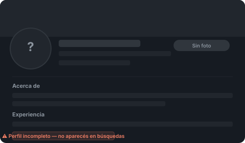
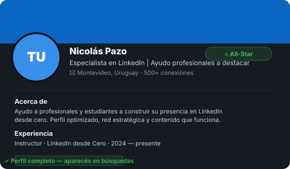
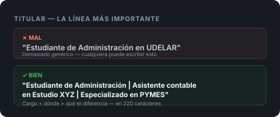

Para qué sirve LinkedIn — y para qué no
LinkedIn es la red profesional más grande del mundo, con más de 1.000 millones de usuarios. Pero eso no significa que sea útil para todo el mundo de la misma manera. Entender para qué sirve te ahorra tiempo y frustraciones.
Para qué sí sirve
LinkedIn es útil para buscar empleo (muchos reclutadores buscan candidatos directamente ahí), para que te encuentren sin que vos estés buscando, para construir una red de contactos profesionales, para vender servicios a empresas (B2B), y para posicionarte como referente en tu área.
Para qué no sirve
No es Instagram. No es un lugar para publicar fotos personales, quejas o chistes sin contexto profesional. Tampoco es un CV que mandás y esperás. Es una red activa — si no la usás, no pasa nada.
LinkedIn funciona como el boca a boca digital. Cuanto más completo y activo está tu perfil, más fácil es que alguien te encuentre cuando busca a alguien como vos.
Cómo funciona el algoritmo básico
LinkedIn muestra tu perfil y tu contenido según qué tan completo está tu perfil, qué tan activo sos, y cuántas conexiones tenés. No necesitás tener miles de contactos para que funcione — necesitás los correctos y un perfil bien armado.
Crear la cuenta paso a paso
Si todavía no tenés cuenta, entrá a linkedin.com y hacé click en "Unirse ahora". Te pide nombre, apellido, email y contraseña. Usá un mail que revisés seguido.
Nombre de usuario (URL del perfil)
LinkedIn te asigna una URL tipo linkedin.com/in/juan-perez-83729a con números feos. Esto lo podés cambiar y vale la pena hacerlo desde el primer día.
Entrá a tu perfil → "Editar perfil público y URL" (esquina superior derecha) → cambiala a algo limpio como linkedin.com/in/juanperez o linkedin.com/in/juan-perez-contador.
Una URL limpia se ve profesional cuando la ponés en un CV, firma de mail o tarjeta personal. Los números random dan sensación de perfil abandonado.
Configuración de privacidad básica
Antes de completar el perfil, configurá que tu perfil sea público (que cualquiera pueda verlo) y desactivá las notificaciones a tus contactos mientras lo editás — de lo contrario cada cambio genera una notificación y es molesto para tu red.
Esto se hace en Configuración → Visibilidad → desactivar "Compartir actualizaciones de perfil con tu red".
La foto de perfil
Los perfiles con foto reciben hasta 14 veces más visitas que los que no tienen. No es opcional.
Antes

Después

Qué hace una buena foto
- ✓Tu cara ocupa el 60-70% del encuadre
- ✓Fondo liso o neutro (pared blanca, gris, exterior desenfocado)
- ✓Buena luz natural (ventana de frente, no de costado)
- ✓Ropa acorde a tu sector (no hace falta traje si no es tu industria)
- ✓Expresión relajada, no forzada
- ✓Foto reciente — si cambiaste mucho de aspecto, actualizala
Foto de casamiento recortada, foto de vacaciones, selfie con filtro, foto de grupo donde cortaste a los demás, foto de hace 10 años, foto pixelada o muy oscura.
La foto de portada
Es el banner detrás de tu foto. La mayoría lo deja en el genérico azul de LinkedIn. Con poner algo simple (tu ciudad, tu área de trabajo, una frase corta) ya te diferenciás. El tamaño ideal es 1584 x 396 px. Podés armarlo gratis en Canva.
El titular: la línea más importante de tu perfil
El titular es la línea que aparece debajo de tu nombre. Es lo que ve cualquier persona antes de entrar a tu perfil. LinkedIn por defecto pone tu cargo actual, pero podés cambiarlo y vale mucho la pena.
Tenés 220 caracteres para decir quién sos, qué hacés y para quién.

Qué hacés | Dónde o para quién | Qué resultado generás o qué te diferencia
El extracto: tu presentación en texto
El extracto es la sección "Acerca de". Tenés hasta 2.600 caracteres, pero lo ideal es entre 150 y 300 palabras. No es un CV — es una presentación en primera persona, como si le explicaras a alguien quién sos en una reunión.
Estructura que funciona
Párrafo 1: Quién sos y qué hacés. Una o dos oraciones directas.
Párrafo 2: Tu trayectoria o especialidad. Qué experiencia tenés y en qué áreas.
Párrafo 3: Qué buscás o qué ofrecés. Si estás buscando trabajo, decilo. Si ofrecés servicios, decí cuáles.
Cierre: Cómo contactarte o qué hacer si alguien quiere conectar.
Me especializo en identidad visual y diseño para redes sociales. Trabajé con más de 20 clientes, desde emprendimientos unipersonales hasta empresas con presencia regional.
Actualmente estoy abierta a proyectos freelance y oportunidades de trabajo en equipo. Si querés ver mi portfolio o conversar sobre un proyecto, escribime por acá o al mail [tu@mail.com]."
Escribir en tercera persona ("María es una profesional apasionada..."), usar frases vacías ("orientada a resultados", "proactiva", "trabajo bien en equipo"), o copiar y pegar el resumen del CV.
Experiencia laboral: cómo cargarla bien
Esta sección es la más importante para reclutadores. No alcanza con poner el cargo y la empresa — necesitás describir qué hacías y qué lograste.
Para cada trabajo, completá
- ✓Cargo exacto (no inventes títulos fancy)
- ✓Empresa y período (mes y año)
- ✓Descripción de 2-4 oraciones: qué hacías, con qué herramientas, para quién
- ✓Al menos un logro concreto si podés (números, proyectos, mejoras)
Cargá prácticas, trabajos freelance, voluntariados, proyectos académicos o trabajos informales. Todo cuenta. Lo importante es que muestre habilidades reales.
Educación, habilidades y primeras conexiones
Educación
Cargá todos los estudios formales (universitarios, terciarios, secundaria si fuera relevante) y cualquier curso o certificación importante. LinkedIn tiene convenio con plataformas como Coursera y LinkedIn Learning — los certificados aparecen automáticamente si los hacés por ahí.
Habilidades (Skills)
Podés agregar hasta 50 habilidades. Agregá las que realmente tenés y que son relevantes para tu sector. Los reclutadores filtran por habilidades, así que usá las palabras que ellos usan (por ejemplo: "gestión de proyectos" en lugar de "organización").
Buscá en LinkedIn ofertas de trabajo de tu sector y fijate qué habilidades piden. Usá exactamente esas palabras en tu perfil.
Primeras 10 conexiones
Empezá con gente que conocés: compañeros de trabajo, de facultad, ex jefes, conocidos del sector. No mandes conexiones masivas a desconocidos todavía — eso lo vemos en el módulo siguiente. Con 10 conexiones reales ya tenés una base.
☐ URL del perfil personalizada (sin números)
☐ Foto de perfil cargada (cara visible, fondo neutro)
☐ Titular con cargo + especialidad + diferencial
☐ Extracto en primera persona (150-300 palabras)
☐ Al menos 2 experiencias laborales con descripción
☐ Educación cargada
☐ 5+ habilidades agregadas
☐ 10 conexiones iniciales enviadas